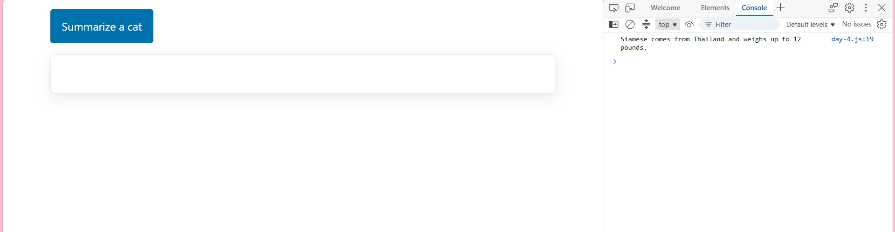
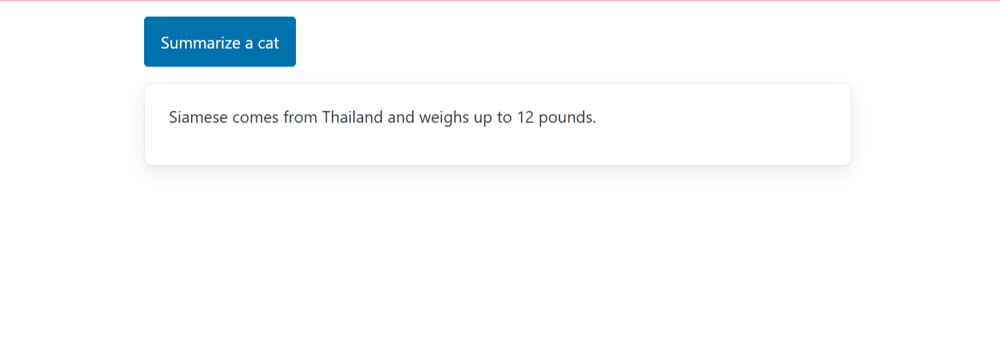

Day 4- One Function-Two Homes
Console Log vs Return
Console Log
When the function is called in the console.log, the return value is shown in the console in Dev Tools instead of the output.

function summarize(pet) {
console.log (pet.name + " comes from " + pet.origin + " and weighs up to " + pet.max_weight + " pounds.");
}
Return
When a function calls for a return, the return value is given back in the output and is visiblly shown.

function summarize(pet) {
return pet.name + " comes from " + pet.origin + " and weighs up to " + pet.max_weight + " pounds.";
}
Global vs Local Variable Scope
A global variable like pets is available everywhere in the file, but a local variable inside summarize() only exists while the function is running. That’s why the page showed undefined when I tried to use a local line outside the function — the value wasn’t returned, so nothing came out of the function’s scope.